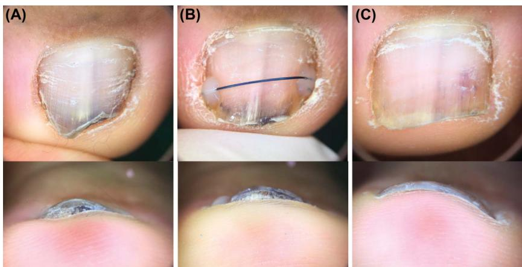
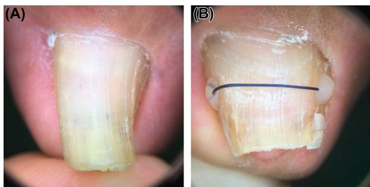
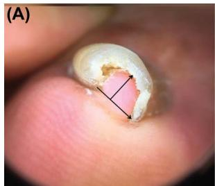
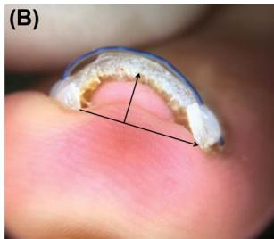

镍钛钢丝矫正甲板畸形的疗效影响因素（Won 2019）
Factors Influencing the Treatment Effect of Superelastic Wire Orthonyxia for Nail Plate Deformity
June-ho Won, MD,*† Ji-sun Chun, MD,† Yong-hyun Park, MDD,‡ Young-ho Won, MD, PhD,* and Sook Jung Yun, MD, PhD*
BACKGROUND Orthonyxia is an effective, noninvasive treatment for transverse nail curvature deformity.
OBJECTIVE To discover the factors influencing treatment results of superelastic wire orthonyxia (SEWO).
MATERIAL AND METHODS A retrospective study was conducted using clinical records of patients treated with SEWO. A multiple linear regression model was used to explain the correlation between correction pace (% per week) and the other collected variables (patient age, sex, position of treated toe, wire diameter [WD, mm], wire residence time [WRT, weeks], nail plate thickness [PT, mm], baseline nail curvature index [NCI], number of previous treatments, and the correction pace of previous treatments [CPT, % per week]). A logistic regression model was used to identify risk factors for adverse effects.
RESULTS A total of 475 cases were collected from 197 patients. The correction pace was positively related to baseline NCI, WD, and correction pace in previous treatment. Also, it was negatively related to WRT and nail PT. No clinical factor was correlated with the occurrence of side effects.
CONCLUSION The correction pace of SEWO is affected by the baseline NCI, the diameter of the wire, nail PT, the CPT, and the WRT.
The authors have indicated no significant interest with commercial supporters.
nail plate deformity. Excessive transverse nail plate curvature is a common type of nail deformity, and it is called “pincer nail” in severe cases. This type of deformity can cause frequent pain and progress to ingrown nails by impinging the periungual soft tissues. The traditional treatment of choice for such conditions is surgery, and various methods have been reported.1,2 However, invasive surgical procedures have drawbacks such as pain, lengthy recovery time, and scarring.
Orthonyxia is a noninvasive method for correcting transverse curvature of nail plates. Various materials and methods have been introduced and showed promising results.3–5 Authors previously reported superelastic wire orthonyxia (SEWO) using ortho-
dontic materials.5,6 This method has 3 advantages compared with the previously reported orthonyxia treatments. First, it has a broader indication. It can be performed in pincer nail cases with very short nails or accompanied periungual inflammation (Figure 1). Second, the materials are more widely available. The materials used in SEWO are standard orthodontic materials and do not require specialized kits produced by specific manufacturers. Last, it has a minimum effect on the patient’s everyday life. Patients can wear their usual shoes and participate in most physical activities right after the treatment. The most significant drawback of this method was the extended treatment period. The pain decreased almost immediately, but SEWO required a relatively long period for the patients to notice the improvement of the nail plate curvature. This period varied between 1 to 6 months, and we felt the need to investigate the factors influencing the treatment efficacy of SEWO. Authors reviewed clinical records of patients who underwent SEWO and performed statistical analysis to determine the factors correlated with treatment efficacy and the occurrence of adverse effects.

Figure 1. Orthonyxia performed on a short, buried toenail. (A) The lateral margin of the nail plate is buried in the periungual tissues. The Ni–Ti wire was attached to the exposed nail plate without manipulating the periungual tissues. (B) One month after the treatment, the wire is maintained, and the width of the nail plate has increased. However, the lateral margin of the nail plate cannot be seen in the front view. (C) Two months after the termination of the treatment. The lateral margin of the nail plate can be seen in the front view, and the slight hyperkeratosis underneath the nail plate has disappeared.
Material and Methods
Patients
This study was a retrospective study conducted in a private dermatology clinic. Patients who treated excessive transverse nail curvature deformity with SEWO between January 2017 and November 2018 were enrolled. When the treatment was repeated on the same toenail, we counted it as a separate case, and a serial number was given (first treatment = 1, second treatment = 2). Exclusion criteria were as follows: (1) concurrent therapy due to other nail disorders; (2) sign of nail apparatus trauma induced by the treatment; and (3) poor clinical photography quality.
Procedure
Patients did not require anesthesia during the treatment. Two bonding sites were selected near the lateral margin of the nail plate. The chosen sites were slightly ground with a nail grinder to increase the contact area of the nail plate with the adhesive agent. The slightly ground nail plate surface was rubbed with saline gauze to remove the debris. A dental adhesive agent was applied on the 2 bonding sites with a microbrush by rubbing it on the surface for 10 seconds each. An ultraviolet device was used to cure the adhesive agent for 10 seconds each. A nickel–titanium (Ni–Ti) superelastic wire was placed over the UV-cured adhesive agent. The flowable resin was applied on the adhesive agent and cured for 20 seconds to fix the Ni–Ti wire on the nail plate. After the wires were secure, the remaining wires were removed, and any sharp margin was covered with flowable resin for patient safety (Figure 2). The diameter of the Ni–Ti wire used in the treatment was empirically chosen between 0.3, 0.36, 0.4, 0.46, and 0.5 mm.
Postprocedure Care
The patients could return to their preferred lifestyle immediately after the procedure. Most physical activities, including the ones involving water, were allowed. The only instruction given to the patients was to avoid direct impact, such as being stepped on or kicking an object, on the treated toenail. There was no restriction about what type of shoes to wear during the treatment period. Patients were instructed to revisit the clinic 1 month after the procedure to check clinical progress and side effects. We also advised them to revisit the clinic when the wire came off so that we can evaluate the need for retreatment. There was no fixed goal for treatment, and retreatment was performed until the patient was satisfied.

Figure 2. (A) The nail plate of the big toe is severely narrowed. (B) Superelastic wire orthonyxia was performed by attaching a superelastic Ni–Ti wire on the lateral margin of the nail plate using dental adhesives and resin. The photograph was taken 14 weeks after the treatment.
Data Collection
Patient age, sex, position of treated toe, wire diameter (WD, mm), wire residence time (WRT, weeks), nail plate thickness (PT, mm), baseline nail curvature index (baseline NCI), adverse effects, serial number of treatment, and the correction pace of previous treatment (CPT) were collected. Cases with missing data were excluded, but the ones that lacked only CPT were salvaged. We measured PT with a vernier caliper. The nail curvature index was measured from clinical photographs (Figure 3). On the clinical photograph of the front view, we drew a straight line between both ends of the nail plate (width) and another line perpendicular to it from the vertex of the nail plate (height). The nail curvature index was calculated by dividing the length of “height” with “width.” The curvature improvement rate


Figure 3. The arrow connecting both ends of the nail plate is the width and the arrow perpendicular to it is the height. Nail curvature index was calculated by dividing height by width. (A) Impingement of the subungual tissue is present. The baseline nail curvature index was 0.851. (B) After 14 weeks of treatment, the nail curvature index decreased to 0.361. The treatment pace was 4.11% per week.
(CIR) was calculated in percentage to measure the improvement.
$$ \begin{array} { r } { \mathrm { C I R } = { ( \mathrm { B a s e l i n e ~ N C I - p o s t - t r e a t m e n t ~ N C I } ) } \ { \mathrm { / B a s e l i n e ~ N C I } } \times 1 0 0 . \qquad } \end{array} $$
The correction pace of the nail plate was acquired by dividing CIR by WRT.
Statistical Analysis
All statistical analysis was conducted with R (The R Foundation for Statistical Computing, Vienna), and the significance level was 0.05. The mean value of the 2 groups was compared using t-test. Two multivariable linear regression models were built. The first model consisted of all the big toe cases in the study group. Cases which lack CPT data were included and CPT data were excluded from the model. The second model was built using the big toe cases, which had all clinical data, including CPT. During the analysis, the variables were transformed to fulfill linear model assumptions. In the first model, pace and WD were transformed into pace1/3 and WD1/4, respectively. In the second model, pace was transformed into pace1/3. Linear model assumption and multicollinearity were checked with variance inflation and generalized variance inflation factors. The initial multiple linear regression equation included all variables. The final regression equation was derived through backward selection. The proportion of total variance explained by each variable was quantified with the function calc.relimp. The output of this function is a statistical measure of how much of the variability of the dependent variable is explained by a single independent variable, and we used it to compare the influence of each dependent variable. Logistic regression was conducted with the entire study group to assess the clinical factors correlated with the occurrence of adverse effects.
Results
A total of 475 cases were collected from 197 patients (Table 1). Adverse effect was reported in 34 cases, and intermittent periungual pain was the most
TABLE 1. Patient Demographics and Clinical Characteristic
| $A I I \ ( \mathsf { n } = 4 7 5 )$ | $B i g \ \tau o e$ $( \mathsf { n } = 4 2 6 )$ | $R e s t o f t h e$ $T o e ( \mathsf { n } = 4 9 )$ | Consecutively Treated $B i g \ T o e \ ( { \mathsf n } = 1 3 4 )$ | |
| Gender (M/F) | 231/244 | $2 2 4 / 2 0 2$ | 7/42 | 79/55 |
| Age | $4 1 . 5 6 \pm 1 5 . 4 5$ | $4 1 . 1 3 \pm 1 5 . 3 4$ | $4 5 . 3 1 \pm 1 5 . 9 9$ | $4 2 . 4 8 \pm 1 5 . 0 5$ |
| Right/left | $2 6 4 / 2 1 1$ | $2 3 0 / 1 9 2$ | 30/19 | 71/63 |
| Serial no. of treatment | $1 . 6 6 \pm 1 . 0 4$ | $1 . 6 8 \pm 1 . 0 6$ | $1 . 5 1 \pm 0 . 7 4$ | $2 . 5 9 \pm \ : 1 . 0 1$ |
| Baseline NCl | $0 . 3 9 3 \pm 0 . 2 4 8$ | $0 . 3 7 6 \pm 0 . 2 2 9$ | $0 . 5 4 0 \pm 0 . 3 4 6$ | $0 . 3 4 5 \pm 0 . 1 5 8$ |
| Wire diameter (mm) | $0 . 3 7 8 \pm \ : 0 . 0 5 1$ | $0 . 3 8 5 \pm 0 . 0 4 9$ | $0 . 3 1 8 \pm 0 . 0 2 9$ | $0 . 3 8 6 \pm 0 . 0 4 7$ |
| Wire residence time (weeks) | $5 . 6 7 \pm 3 . 0 0$ | $5 . 8 0 \pm 3 . 0 5$ | $4 . 6 1 \pm 2 . 2 8$ | $6 . 5 2 \pm 3 . 6 5$ |
| Nail plate thickness (mm) | $1 . 1 6 \pm 0 . 4 5$ | $1 . 2 0 \pm 0 . 4 5$ | $0 . 7 7 \pm 0 . 2 5$ | $1 . 1 7 \pm 0 . 3 7$ |
| CIR (%) | $2 5 . 6 7 \pm 1 5 . 4 6$ | $2 3 . 9 8 \pm 1 4 . 4 1$ | $4 0 . 4 3 \pm 1 6 . 5 6$ | $2 0 . 4 2 \pm 1 3 . 5 5$ |
| Pace (%/week) | $5 . 6 8 \pm 4 . 3 4$ | $5 . 1 6 \pm 3 . 8 6$ | $1 0 . 2 7 \pm 5 . 5 0$ | $4 . 1 0 \pm 3 . 5 4$ |
| Adverse effect | 34 | 29 | 5 | 10 |
CIR, curvature improvement rate; NCI, nail curvature index.
common (27 cases). In 3 cases, the NCI increased. The average treatment pace of the big toe was lower than that of the rest of the toes with statistical significance $( p = 1 . 1 0 5 \times 1 0 ^ { - 7 } )$
Four variables were included in the first regression model, and the equation was
$$ \begin{array} { r l } & { \sqrt [ 3 ] { \mathrm { P a c e } } = 0 . 6 2 0 \times \mathrm { ( B a s e l i n e ~ N C I ) } + 1 . 2 4 4 \times \mathrm { W D } } \ & { ~ - 1 . 2 3 8 \times \sqrt [ 4 ] { \mathrm { W R T } } - 0 . 2 1 0 \times \mathrm { P T } + 3 . 0 3 6 } \end{array} $$
The adjusted $\mathrm { R } ^ { 2 }$ value was 40.5%. The output of calc.relimp for baseline NCI, WD, $\mathbb { W } \mathrm { R T } ^ { 1 / 4 }$ , and PT was 4.4%, 2.6%, 31.3%, and 2.6% respectively.
Three variables were included in the second regression model, and the equation was
$$ \begin{array} { c } { \sqrt [ 3 ] { \mathrm { P a c e } } = 2 . 4 4 \times \mathrm { W D } - 0 . 0 6 \times \mathrm { W R T } + 0 . 0 2 \times \mathrm { C P T } } \ { + 0 . 8 2 } \end{array} $$
The adjusted $\mathrm { R } ^ { 2 }$ value was 43.9%. The output of calc.relimp for WD, WRT, and CPT was 7.8%, 29.3%, and 8.0% of the variance, respectively.
All the variables (age, sex, the position of the treated toe, WD, WRT, PT, baseline NCI, the serial number of treatment, and CPT) included in the logistic regression model for detecting adverse effects yielded a p‐value higher than 0.05.
Discussion
Previous reports of orthonyxia mainly focused on the novelty of the method, and the treatment effects were not quantitatively analyzed. Our study is meaningful in the aspect that the influencing factors of orthonyxia were identified in a relatively large study group.
According to the adjusted R2 value, the first and second regression model explains 40.5% and 43.9% of the variability of the correction pace around its mean value, respectively. The equation of the regression model indicates that the elements required for rapid correction of transverse curvature of nail plates were high baseline NCI, thin nail plate, a Ni–Ti wire with a large diameter, and frequent replacement of the applied wire. The variable with the most significant coefficient in both models was WD (1.244 and 2.44). However, it had a narrower range (0.3–0.5 mm) of variability compared with WRT (2–25 weeks). Wire residence time showed the largest calc.relimp output (31.3% and 29.3%) in both models, which means that it explained the most amount of variances. Accordingly, we concluded that WRT had the most influence on the correction pace. Unlike the linear regression model, the logistic regression model could not identify any risk factors related to adverse effects in SEWO.
The influencing factors discovered in this study can be controlled while performing SEWO. Wire diameter can be selected between 0.3 mm and 0.5 mm,
modification of the follow-up schedule can control WRT, and the nail plate can be ground to reduce thickness. The transverse curvature of the nail plate cannot be modified directly, but adding a resin hump on the ventral surface of the nail plate can increase the strain of the applied wire to emulate high baseline NCI.
When compared with the big toes, the average thickness of the smaller nail plates was thinner and the baseline NCI was significantly higher. As a result, the NCI of smaller toenails improved more rapidly compared with big toes.
The baseline state of the nail plate (curvature index and PT) was an influencing factor in the first model but became an insignificant factor in the second model. Instead, the correction pace of the previous treatment data, which we did not include in the first model, influenced the treatment pace significantly in the second model. Interestingly, the amount of variance explained by the baseline state of the nail plate in the first model (7%) was similar to that explained by the CPT data (8%). The CPT datum is a combined result of multiple factors. Moreover, some of these factors are neither controllable nor observable by the physician. For example, the pressure applied to the toenail (which is affected by factors such as body weight, type of preferred shoes, gait, and frequently done activities) can influence the thickness and curvature of the toenail.7,8 Moreover, the diet and the climate can alter the chemical composition or the water content of the toenail and influence the strength of the nail plate.9 These yet, undiscovered “patient factors” were not analyzed because of lack of data. However, we presumed that the baseline state of the treated nail is a part of the “patient factor,” and therefore, its influence was masked by that of CPT, which is the result of the entire “patient factor.”
Orthodontics has a long history, and it is still actively performed and researched. Although the materials used in SEWO are not cleared for orthonyxia, we presumed it would be safe because the oral cavity is much more sensitive than the foot. Much orthodontic knowledge has been adopted in SEWO. However, SEWO has some different points.
Previous orthodontic studies have revealed that superelastic wires continuously exert a small amount of correction force irrelevant to the degree of deformation, which induces gradual tooth movement.10,11 In our study, correction pace increased proportionally to NCI, which suggests an increase in correction force proportional to the degree of deformity. We presume it is because the wire lost its metallurgical characteristics because of excessive strain. A strain that exceeds 8% of the span length can permanently deform the Ni–Ti wire, which indicates alteration of its original mechanical properties.12 And, the lowest baseline NCI in our study was 0.106, which was approximately 10% strain of the span length.
Another interesting finding is the decrease in the correction pace as the WRT increases. At first, we believed the superelastic wire wore out according to the residence time resulting in the decrease of the elastic force of the Ni–Ti wire. However, a previous orthodontic study observed an increase in stress after a Ni–Ti wire with 0.36-mm diameter was applied on the tooth for 3 months.13 The average residence time of the wire in our study was 5.67 weeks, which was a short time for the elasticity of the wire to wear out. The altered effect of residence time to correction pace may have occurred because of the different circumstances between the tooth and nail.
Orthodontic devices are located inside the oral cavity, whereas orthonyxia devices are located outside the body. The oral cavity usually maintains a stable temperature and humidity level. However, the environment surrounding the superelastic wire on the nail plate can be much diverse. According to a previous study, the elastic force of a superelastic wire changes proportionally to temperature. The elastic force decreased by more than 50% when it was cooled to 2- C compared with the force exerted at 37-C.14 In addition, the duration of the extreme temperature may affect the Ni–Ti superelastic wire. The temperature of the oral cavity may change dramatically by food, but this change only lasts for a few minutes. The device located on the nail plate can be exposed to an extreme temperature for an extended period according to the lifestyle of the patient, and it could have hastened the wear out of the superelastic wire.
Another unique characteristic of orthonyxia is that the device moves away from the nail matrix because the nail grows at a rate of approximately 1 mm per month.15 If the origin of the deformity is located near the proximal portion of the nail plate, the correction force conducted to it will diminish as the wire moves away and, in turn, will slow down the correction pace.
Severe deformity and thick wires will increase the correction force and induce a rapid correction. However, stronger correction force and faster correction pace may not always be beneficial. There has been a case of periungual tissue necrosis followed by treatment of the pincer nail with a shape-memory alloy.16 We found 4 cases of nail apparatus trauma (onycholysis, broken nail plate, and subungual purpura) while reviewing our clinical records. In orthodontics, hypoxic condition is created in the tissue compressed by the correction force, which leads to bone resorption.17 So, it is recommended to set the orthodontic force to the minimal amount of force, which generates tooth movement and avoid irreversible side effects.
A study including more clinical information is needed to improve the adjusted R2 value and discover risk factors for adverse effects. Also, the prognosis, such as long-term side effects and recurrence rates, of rapid correction in orthonyxia needs to be evaluated because excessive correction pace is known to induce irreversible tissue changes in orthodontics.18
相关笔记
- 嵌甲治疗争议 (2012)
- 硅胶分隔垫制作
- 甲病知识地图